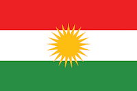

The Kurdish Forces
The Kurdish People
Kurdish forces, represented in yellow, are another major player in syria. The kurdish peoples are a ethnic/religious group live in the parts of Syria, Iraq, Iran, and Turkey and practice a moderate version of Islam. They have been fighting, both peacefully and violently, for an independent kurdish in all the areas that they occupy. In Syria they have successfully carved out territory for themselves and held it against aggressive advances by the islamic state and other militant islamic groups. The Kurds are a very progressive people advocating for universal sufferage and even letting women serve on the frontlines of their armies. It is their passion for the establishment of their own state that has led to their outstanding success. In the areas that they control in syria and Iraq they have established their own state and successfully govern it as well.
The Kurdish Forces in Syria
In Syira, The Kurdish Forces are actually the most effective fighters of the Islamic State. The Kurdish forces, with the assitance of a national coalition bombing campaign, managed to decisively defeat the Islamic State at Kobani They are also maintaining a cautious truce with the assad regime currently. They are also very successfull in combating the Islamic State in Iraq. You can learn more about the Kurdish forces on the frontlines This VICE video